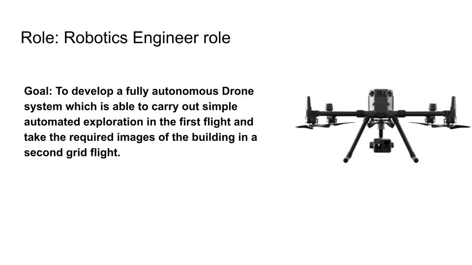

Projects
Selected projects
Each project starts with a one-line explanation anyone can follow, then the technical details for those who want them.
Industry
Robotics Engineer — Joulea LLC (May 2023 – Jan 2024)
I built the perception and navigation stack that let drones and robots scan Atlanta's largest buildings in 3D — mapping as they fly, dodging obstacles, and turning raw scans into inspection-ready models.

- Built and tested a LiDAR-inertial SLAM and localization pipeline for autonomous operation in large indoor environments — point-cloud mapping, odometry, GPS inputs, and map-based relocalization.
- Developed DJI SDK drone-autonomy workflows for 3D scanning and building inspection: flight execution, data capture, point-cloud processing, map generation, and QA of reconstructed environments.
- Implemented path-planning and navigation workflows integrating GPS, inertial sensing, perception outputs, and mission-level constraints, with collision-aware navigation in cluttered, partially dynamic environments.
- Debugged field issues across GPS, IMU, mapping, calibration, and autonomy stacks, improving the reliability of real-world data collection.
PLATFORM DJI drones · ground robotsSTACK LiDAR-inertial SLAM · DJI SDK · PCLRESULT 3D models of major Atlanta buildings
Graduate class projects · Georgia Tech
Language-guided robotic trajectory generation · Deep Learning, 2023
Tell a drone "stay away from the table and fly smoothly," and it reshapes its flight path to match — language in, trajectory out.
- Used CLIP/BERT-style language representations to encode user-defined constraints for trajectory planning.
- Applied diffusion-model methods to learn conditional distributions over feasible trajectory modifications.
- Built simulation workflows for testing planned trajectories on drone platforms.
STACK CLIP/BERT · diffusion modelsPLATFORM simulated drones
Learning from human feedback for robot tasks · Human-Robot Interaction, 2023
Instead of programming a household robot's behavior, people simply tell it when it's doing well or badly — and the robot learns to act the way users actually want.
- Explored reinforcement learning from human feedback (RLHF) for household tasks in Stretch RE1 simulation environments.
- Compared policies trained with and without human feedback to study user-aligned robot behavior.
- Analyzed how feedback changes task completion, policy behavior, and failure modes in assistive settings.
PLATFORM Stretch RE1 (sim)STACK RLHF · policy comparison
Multi-agent robotics planning · Robot Intelligence: Planning, 2022
When a robot and a human share the same space and the same goal, who moves where? I built a simulation to find out — and tested five learning algorithms on it.
- Built a realistic human-robot simulation environment for coordinated multi-agent task planning.
- Implemented and evaluated PPO, SAC, A2C, Behavior Cloning, and MARWIL for collaborative robot behaviors.
STACK PPO · SAC · A2C · BC · MARWILFOCUS human-in-the-loop planning
Undergraduate projects · IIT Kanpur
Indoor localization of multirotors (Bachelor's thesis)
Indoors, a drone can't use GPS — so I taught it to figure out its position and heading from wireless beacons alone, with no compass needed.
- Implemented range-based SLAM with wireless beacons for quadcopter localization indoors.
- Automated noise tuning in the Gaussian filter using Particle Swarm Optimization.
- Proposed a novel way to estimate orientation and position without a magnetometer or external sensors.
YEAR 2019STACK range SLAM · PSO · Gaussian filtersRESULT led to ICUAS 2020 paper
Depth-camera gesture interface ("Desktopography") · Electronics Club, 2019
A projector plus a depth camera turns any desk into a touchscreen — wave your hand and the computer pointer follows your finger.
- Developed a low-cost human-computer interface using depth cameras and projectors for intuitive robot/computer control.
- Implemented hand tracking and feature-based segmentation using OpenCV, SIFT, SURF, and ORB.
STACK depth vision · OpenCV · SIFT/SURF/ORBRESULT gesture-driven interface
Swarm robotics for ground bots
Five small robots talk to each other over WiFi and arrange themselves into shapes — without ever colliding, thanks to a shared traffic-planning algorithm.
- Built five ground bots with interconnected WiFi communication and differential-drive controllers.
- Localized the bots using ArUco markers and infrared sensors.
- Implemented centralized multi-agent path planning (Conflict-Based Search) for shape formation.
YEAR 2019STACK CBS planning · ArUco · diff-driveRESULT multi-bot shape formation
Team lead & competitions · Aerial Robotics IITK
Team Lead — Robotics Systems (Nov 2017 – Apr 2019)
I led the student team building autonomous drones — coordinating perception, planning, control, and hardware into competition-ready systems.
- Led development of a vision-based UAV precision-landing system for search-and-rescue using onboard perception, object tracking, inertial sensing, and Pixhawk-based flight control.
- Tuned DJI SDK velocity-control loops for target tracking and autonomous flight, improving response and stability.
- Implemented and evaluated visual-inertial odometry using camera + IMU data for navigation in GPS-limited environments.
- Coordinated system integration across perception, path planning, control, GPS/IMU sensing, and UAV subsystems.
ROLE team leadSTACK Pixhawk · VIO · DJI SDKRESULT 🥇 Inter-IIT gold (DRDO S&R)
Inter-IIT 2019 · DRDO UAV Fleet Challenge — 🥇 Gold, nationwide
A fleet of drones had to find and pinpoint colored boxes hidden in an unknown environment. Our drones could spot a box, track it precisely, and land on it.
- Developed a robust vision-based drone landing system with precise object tracking.
- Designed Kalman estimation for smooth target tracking across the UAV fleet.
TEAM Aerial Robotics IITKSTACK vision · Kalman filteringRESULT gold medal, national
Inter-IIT 2018 · Pluto-X Hackathon — 🥈 2nd nationwide
Build a palm-sized drone that follows a wall on its own — using only tiny sonar sensors, and without drifting off course when readings get noisy.
- Built an embedded quadcopter module with sonar sensors for autonomous movement.
- Developed a wall-following position controller robust to outlier sensor noise.
PLATFORM Pluto-X micro droneSTACK sonar · embedded controlRESULT 2nd prize, national